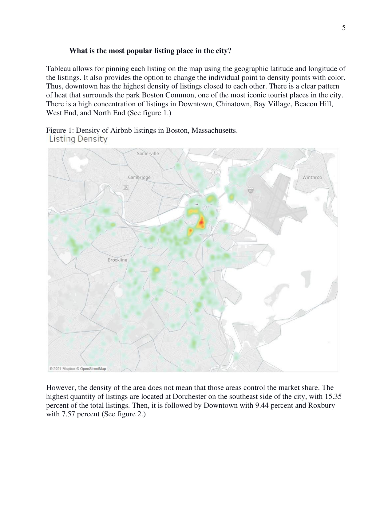
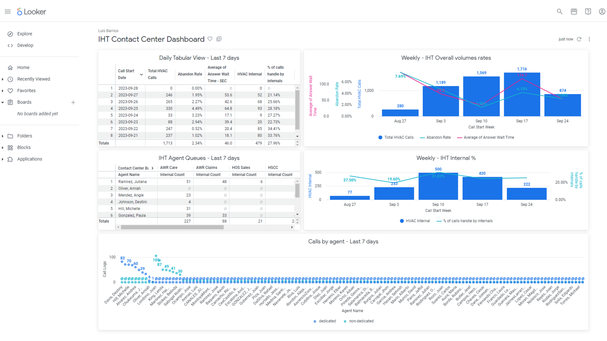
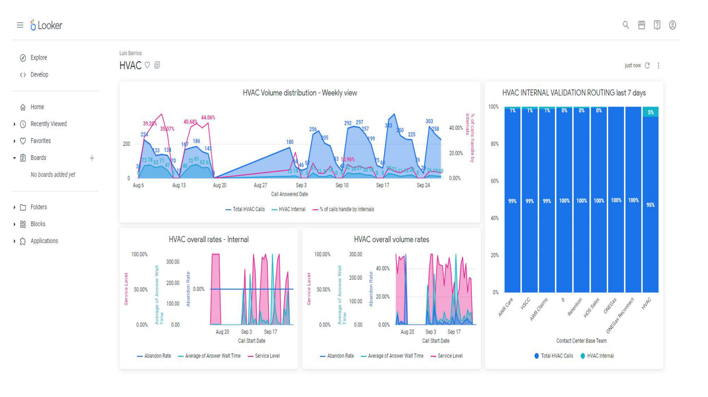
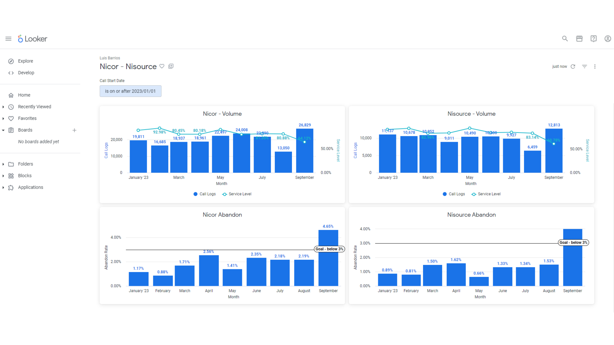

Transforming data into business insights and financial strategies
SQL • Python • Power BI • Tableau • Excel • Looker • VBA • AWS
Work Experience
Workforce Management Analyst – (Data - BI Analyst) Oncourse Home Solutions (Jun 2022 – Present)
- Built dynamic dashboards, automated flows, and reporting processes using SQL, Power BI, Python, Excel, Tableau, and Looker.
- Contribute to the development and data gathering of multiple monthly/yearly reports for the contact center’s leadership and
finance including actuals, budgets, and forecasts.
- Developed and maintained a roster that combines over 1.5K employees from multiple data sources with weekly validation processes.
- Analyze queue trends, call volumes, and arrival patterns to provide actionable scheduling insights.
Teaching Assistant – Southern Illinois University Edwardsville (Jan 2020 – May 2022)
- Supported course delivery and student engagement; led workshops for underrepresented groups.
Field Analyst Intern (Data Analyst) – Ascension (The Resource Group) (Summer 2021)
- Produced ad hoc reports, conducted data validation, and helped identify cost savings opportunities in healthcare operations.
Bilingual Service Representative – Equifax (May 2019 – Dec 2019)
Managed customer service calls, resolved disputes, and collaborated across departments for issue resolution.
Projects
Commission Automation System: Streamlined processes for legacy system that distributes over $400K monthly to 600+ employees.
Amazon Connect Telephony Support: Supported setup and integration for a new contact center telephony system.
Airbnb Data Report: Built geo-visualizations using Tableau based on Boston listings.

Looker Dashboards: Developed visual dashboards for business analytics and operations insights.


